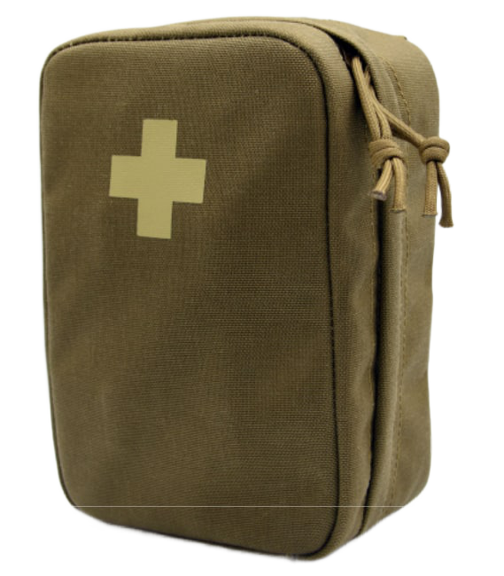
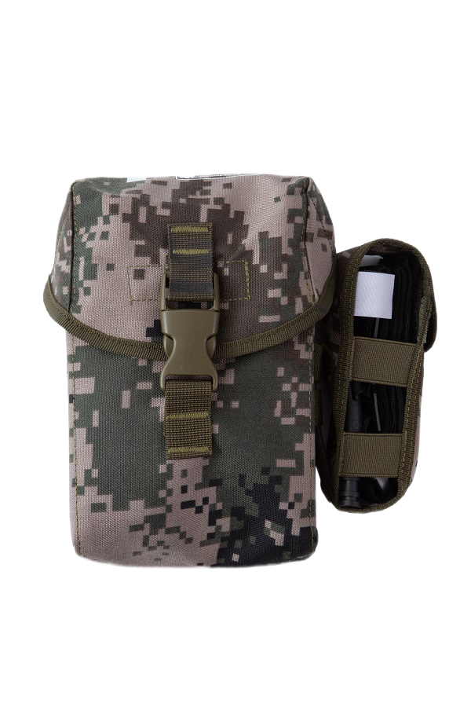
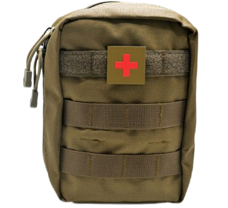

СЛАВА УКРАЇНІ!
Під час війни дуже важливо допомагати нашій армії, волонтерити. Наша онлайн аптека підготувала програму "Допоможи ЗСУ". Завдяки цій програмі ви маєте можливість придбати спеціальні тактичні аптечки, які ми передамо нашим захисникам та допоможемо нашій країні стати ближчою до перемоги!
|  |  |  |
| ДОПОМОГТИ |
ОПИС
Аптечка тактична розроблена спеціально таким чином, щоб за допомогою її вмісту в найкоротший час усунути екстрену кровотечу кінцівок, пошкодження грудної клітки (відкритий пневмоторакс) та інші життєзагрозливі стани.
Підсумок аптечний виконаний з водовідштовхувальної тканини в камуфляжному забарвленні піксель, підсумкові стінки підсилені пластиковими вставками для додаткового захисту вмісту від деформацій: стисків і ударів.
Усередині підсумок має спеціальний вкладиш для вмісту, який кріпиться еластичним витим шнуром до самого підсумка.
ВМІСТ
| 1 | Підсумок аптечки тактичної | 1 шт |
| 2 | Джгут-турнікет "Парамедик" | 2 шт |
| 3 | Бандаж компресійний "Парамедик" з однією подушкою | 1 шт |
| 4 | Кровоспинний гемостатичний бинт | 1 шт |
| 5 | Назофарингеальний повітропровід (повітропровід, трубка) з лубрікантом | 1 шт |
| 6 | Ножиці тактичні 7.5″ | 1 шт |
| 7 | Бінт марлевий стерильний 7м х 14см | 1 шт |
| 8 | Рукавички медичні нітрилові (розмір L або XL) | 2 шт |
| 9 | Термопокривало | 1 шт |
| 10 | Лейкопластир на нетканній основі 3 см х 5м | 1 шт |
| 11 | Маркер водостійкий для нанесення інформації | 1 шт |
| 12 | Карта постраждалого бійця (встановленого зразка) | 1 шт |